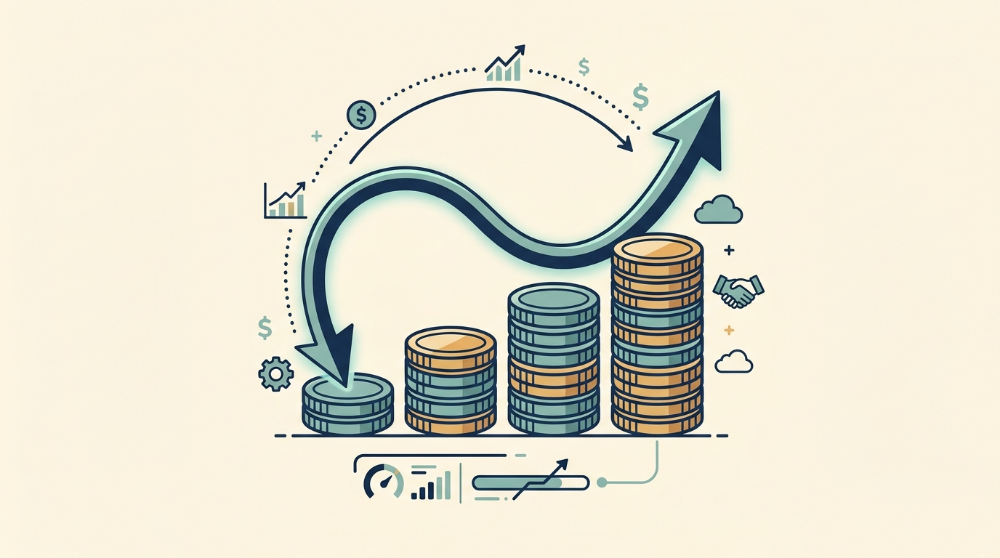

Part I — Understanding Financing and Ownership: Money, Authority and Returns
Same Company, Same Performance, Three Different Returns

AI-generated illustration
Part I — Understanding Financing and Ownership: Money, Authority and Returns

AI-generated illustration